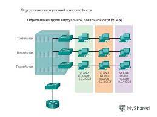

VLAN-ների ներդրում

Ethemet անջատիչները ստանում են Ethemet շրջանակներ, որոշում կայացնում և հետո
վերահղում (անջատել) ստացված շրջանակները: Այս հիմնական տրամաբանությունը հիմնված է
այն ինտերֆեյսների MAC հասցեների վրա, որոնց վրա հասնում են շրջանակները և որոնց փոխարկիչը փոխանցում է դրանք: Փոխարկիչ շրջանակների անցման որոշման մասին
շատ գործոններ են գործում, բայց այս գրքում քննարկված բոլոր գործոններից,
վիրտուալ տեղական ցանցերը (VLAN) ունեն ամենամեծ ազդեցությունը:
Այս գլուխը կենտրոնանում է VLAN-ների հայեցակարգի և դրանց կազմաձևման վրա: Առաջին բաժինը քննարկում է հիմնական հասկացությունները, ներառյալ VLAN-ների ազդեցությունը մեկ անջատիչի վրա,
օգտագործելով միջքաղաքային կապ՝ ընդգրկող VLAN-ներ ստեղծելու համար
բազմաթիվ անջատիչներ և երթուղիչի միջոցով YLAN-ների միջև երթևեկի փոխանցում: Երկրորդ բաժինը ցույց է տալիս VLAN-ների կազմաձևումը
և դրանց ողնաշարը, ներառյալ ստատիկ ինտերֆեյսի նշանակումը:
--------------------------------------------------------------------------------------------------------------------------------------------------------------------------------------------------------------------------------------------------------------------------------------------------------------------------------------------------------------------
VLAN հասկացությունը
Նախքան VLAN-ի ուսումնասիրությունը սկսելը, նախ իմաստ ունի պարզել, թե ինչ է դա
այդպիսին. Մի կողմից, տեղական ցանցը ներառում է բոլոր օգտագործողների սարքերը,
սերվերներ, անջատիչներ, երթուղիչներ, մալուխներ և անլար մուտքի կետեր նույն տարածքում: Բայց վիրտուալ LAN հասկացության համար ավելի հարմար է տեղական ցանցի մեկ այլ սահմանում.
Տեղական ցանցը (LAN) միացնում է բոլոր սարքերը նույն հեռարձակման մեջ
տիրույթ.
Լայնաշերտ տիրույթը ներառում է ցանցին միացված բոլոր սարքերը:
LAN, այնպես որ, երբ սարքերից որևէ մեկը հեռարձակում է ուղարկում
շրջանակ, մնացած բոլոր սարքերը ստանում են դրա պատճենը: Այսպիսով, մյուս կողմից
կողմը, տեղական ցանցը և հեռարձակման տիրույթը նույնն են:
Առանց վիրտուալ ցանցերի, անջատիչը ենթադրում է, որ իր բոլոր ինտերֆեյսները կան
նույն հեռարձակման տիրույթում: Այսպիսով, երբ հեռարձակման շրջանակը հասնում է անջատիչի մի պորտին, այն փոխանցում է բոլոր մյուսներին:
նավահանգիստները. Այս տրամաբանությամբ ստեղծել երկու տարբեր հեռարձակման տիրույթ
(կամ LAN), դուք պետք է գնեք երկու տարբեր Ethemet անջատիչներ
LAN դիզայնը, որն ունի ավելի շատ VLAN-ներ՝ ավելի քիչ սարքերով, յուրաքանչյուրը հաճախ ավելի շատ առավելություններ ունի: Օրինակ, հեռարձակման հաղորդագրություն կստացվի մեկ VLAN հաղորդավարի կողմից
և կառավարվում է այս VLAN-ի մյուս բոլոր հոսթերների կողմից, բայց ոչ այլ VLAN-ների հոստերերի կողմից:
Յուրաքանչյուր հեռարձակման շրջանակ ստացող հաղորդավարների քանակի սահմանափակում,
նվազեցնում է հյուրընկալողների թիվը, որոնք վատնում են ռեսուրսները՝ անտեղի վերամշակելով
հեռարձակվող հաղորդագրություններ. Այն նաև նվազեցնում է անվտանգության խախտման վտանգը,
քանի որ ցանկացած հոսթի կողմից ուղարկված շրջանակները հասնում են ավելի փոքր քանակի
տանտերերին. Եվ սրանք ընդամենը մի քանի պատճառ են, թե ինչու են հոսթները բաժանվում առանձին VLAN-ների:
Ստորև բերված է փոքր հեռարձակման տիրույթների (VLAN) ստեղծման ամենատարածված պատճառների ցանկը.